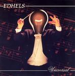

| Artist: | Edhels |
| Title: | Universal |
| Label: | Mals MALS 053 |
| Length(s): | 44 minutes |
| Year(s) of release: | 2005 |
| Month of review: | [01/2006] |
| 1) | Martha | 3.12 |
| 2) | No Message/Sophie's Legs | 8.15 |
| 3) | Tenera Lupa | 5.22 |
| 4) | Mad Wedding | 7.16 |
| 5) | Egyptian's Matter | 5.30 |
| 6) | Keep In Contact | 3.50 |
| 7) | Martha (live) | 10.57 |
Still, a song like No Message/Sophie's Legs sounds so very live that I can hardly think otherwise. The guitar sound reminds me somewhat of the blues rock oriented sound of Rick Ray. The sound quality is not great here. The vocals are still quite sloppy and uncontrolled, but the first part at least has a memorable vocal melody. Halfway we switch into Sophie's Legs, which is more in the vein of plain blues rock with female backing vocals. In between the guitar sound is varied enough, with a Genesis feel pervading this second part, alternated with Frippian excursions. An interesting combo.
Tenera Lupa continues this album which has a bit more groove than usual in the prog world. Especially on this track, Bastianelli sings with feeling, set against a very atmospheric background. In a song like this it seems his way of singing pays off, the freedom he takes is used well.
On Mad Wedding, the funkiness rises high again, this is certainly not the Edhels I remember. For a funk band, I guess Edhels lack the precision (you can be groovy and precise) in this context. In between, we have het Frippian excursions lead, I would think, by Ceccotti. But maybe the two guitarists have split up the Frippian leads and the blues rock leads. The song has quite some dreamy passages, in which I recall Genesis. But past halfway, we get an experimental break after which we move into avant areas (The ProjeKCts).
Egyptian's Matter is a very Discipline/Belew like track, the vocalist scatting over the place. His vocals style is also similar to Belew. The follow-up track is similarly styled, Keep In Contact. The vocalist repetitively lets us hear that we wants to keep contact. It sounds a bit manic. The song does have some darker vocal passages as well. But the vocals and lyrics are still not great, which certainly hampers the song.
We end with a long live version of Martha, the opener of the track. This is an atmospheric opening track with subtle guitar play, and percussive piano. The free vocal style fits the song well this time, and he also seems to perform somewhat better in a live situation. The voice of the vocalist, but the way, reminds me of the vocalist of Castanarc. Halfway the angular Frippian guitars set in, but we get plodding bluesrock instead, a bit in the vein of Rick Ray. This final half is more like the opener version.